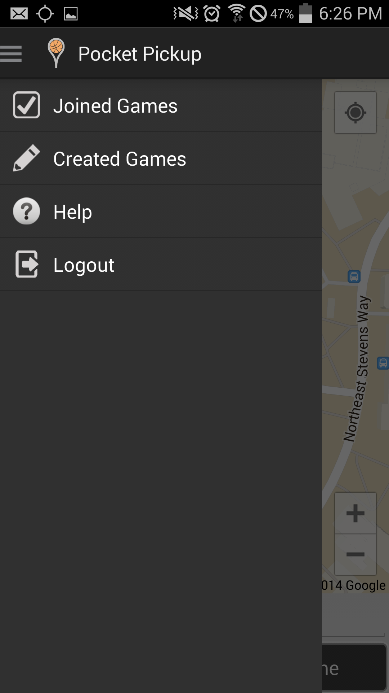
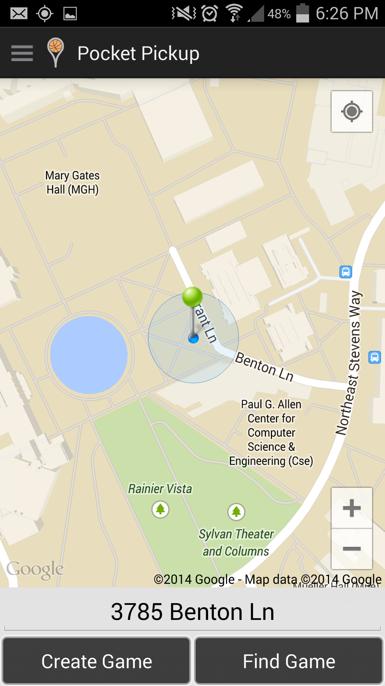
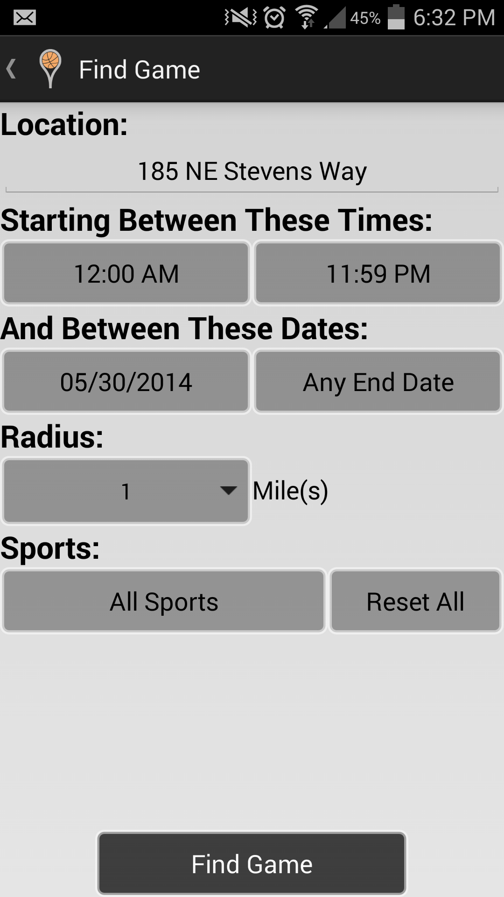

Sergey Naumets (snaumets@cs)
Victor Farkas (vfarkas@cs)
Jacob Gile (jjgile@cs)
Patrick Larson (palarson@cs)
Kane Swanson (kane@cs, kdswan@uw)
Isaiah Mathieu (imathieu@cs)
Users who do not have an account or is not signed in see this when the app opens. Users must log in with Facebook to use the application.

After logging in, a use is provided with the option of logging out from the settings screen
A user who already has an account and is signed in will see this page when the app opens
Tapping the 'Create Game' button starts the process of creating a game at the location of the green pin

Choosing the 'Find Game' button promts the user for information about the desired game(s)
Games the match the search criteria are displayed on screen, inside a search radius

Tapping a game's flag brings up a detail page, from which the user can join, leave or delete the game, depending on their role and its status